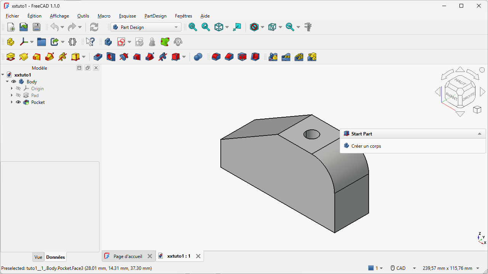

Navigeren in 3D & de feature-boomNaviguer en 3D & l'arbre des fonctionsNavigating in 3D & the feature tree
Voor je iets tekent, moet je je vlot kunnen bewegen in de 3D-ruimte en begrijpen hoe FreeCAD je werk opbouwt en onthoudt. Drie dingen staan centraal: de basisvlakken waarop je tekent, de modelboom die je hele werkwijze bewaart, en het navigeren met de muis.Avant de dessiner : se déplacer dans l'espace 3D et comprendre comment FreeCAD construit et mémorise votre travail — les plans de base, l'arbre du modèle et la navigation.Before drawing: move around in 3D space and understand how FreeCAD builds and remembers your work — the base planes, the model tree and navigation.
- de drie basisvlakken (XY/XZ/YZ) en de oorsprong herkennen en benoemenreconnaître les trois plans de base et l'originerecognise the three base planes and the origin
- de modelboom lezen en begrijpen wat "1 body = 1 solid" betekentlire l'arbre du modèle et comprendre « 1 corps = 1 solide »read the model tree and understand "1 body = 1 solid"
- vlot roteren, pannen en zoomen met de Gesture-navigatietourner, déplacer et zoomer avec Gesturerotate, pan and zoom fluently with Gesture
- de navigatiekubus en standaardaanzichten gebruiken om je oriëntatie te herstellenutiliser le cube de navigation et les vues standarduse the navigation cube and standard views

01De 3D-ruimte: drie basisvlakken en de oorsprongL'espace 3D : trois plans de base et l'origine3D space: three base planes and the origin
Een 3D-model leeft in een ruimte met drie richtingen: X (links-rechts), Y (voor-achter) en Z (omhoog-omlaag). Het punt waar die drie elkaar kruisen heet de oorsprong (0, 0, 0). Dat is je vaste ankerpunt: maten die je later "vanaf de oorsprong" definieert, liggen muurvast.
In FreeCAD teken je nooit zomaar "in de lucht". Elke 2D-schets begint op een vlak. Er zijn drie standaard basisvlakken, opgespannen door telkens twee assen:
- XY-vlak — het horizontale vlak, alsof je van bovenaf naar je werk kijkt. Dit is het meest gebruikte startvlak, bijvoorbeeld voor de bodemplaat van een behuizing.
- XZ-vlak — een verticaal vlak, alsof je van voren kijkt.
- YZ-vlak — een verticaal vlak, alsof je van opzij kijkt.
Welk vlak je kiest, bepaalt hoe je onderdeel in de ruimte staat. Voor onze behuizing tekenen we de bodem op het XY-vlak en bouwen we naar boven (Z) op. Onthoud vooral het idee: eerst een vlak, dan een 2D-schets, dan pas een 3D-vorm.
02De modelboom: je werkwijze, stap voor stap bewaardL'arbre du modèleThe model tree
Links in het venster staat de modelboom (ook wel feature-boom of operatieboom). Dit is het hart van parametrisch werken: elke stap die je doet, wordt als een aparte regel in die boom bewaard, in volgorde. Teken je een schets, dan verschijnt de schets in de boom. Maak je daar een vaste vorm van, dan komt die bewerking eronder. Zo bouw je je model op als een stapel logische stappen die je later allemaal opnieuw kunt openen en wijzigen.
Bovenaan die stapel staat een Body (lichaam). Een Body is de container voor één samenhangend, vast onderdeel. De vuistregel voor beginners — en die houden we in deze cursus aan — is eenvoudig: één Body = één vast onderdeel (één solid). Wil je een tweede los onderdeel maken (bijvoorbeeld een deksel naast de bak), dan maak je gewoon een tweede Body. Zo blijft je project overzichtelijk.
In elke Body zit ook een onderdeel Origin (oorsprong). Klap je dat open, dan vind je daar net die drie basisvlakken en de assen terug. Goed om te weten: als je een vlak niet ziet, kun je het hier terugvinden en zichtbaar maken.
De modelboom is geen "laag" zoals in een tekenprogramma, maar een geschiedenis: de volgorde van je stappen telt. Later leer je hoe je in die geschiedenis terugspringt om iets te wijzigen — zonder opnieuw te beginnen.L'arbre est un historique : l'ordre des étapes compte.The tree is a history: the order of steps matters.
03Navigeren met de muis (Gesture)Naviguer à la souris (Gesture)Navigating with the mouse (Gesture)
In hoofdstuk 2 kozen we de navigatiestijl Gesture. Die stijl bepaalt met welke muisknoppen je door je 3D-model beweegt. Even oefenen tot het in de vingers zit, loont: zo draai je later moeiteloos rond je behuizing om elke kant te bekijken.

- ROTERENHoud de linkermuisknop ingedrukt en sleep. Je draait rond je model. FreeCAD toont even het punt waarrond je draait (het rotatiecentrum). Waarom: roteren laat je een onderdeel langs alle kanten bekijken — onmisbaar om te controleren of een uitsparing of gat er goed uitziet.
- PANNENHoud de rechtermuisknop ingedrukt en sleep. Het beeld schuift mee, zonder te draaien. Waarom: pannen verschuift je blik zonder de oriëntatie te verliezen — handig om naar een ander deel van een groot model te gaan.
- ZOOMENDraai aan het muiswiel om in en uit te zoomen. Waarom: inzoomen helpt om nauwkeurig een rand of hoekpunt aan te klikken; uitzoomen geeft overzicht.
- CENTRUMKlik met het wiel (middelste knop) op een hoekpunt van je model om het rotatiecentrum daarheen te verplaatsen. Waarom: zo draai je rond het detail dat je wil bekijken, in plaats van rond een willekeurig punt.
Ben je je oriëntatie kwijt? Gebruik de navigatiekubus rechtsboven: klik op een vlak (Boven, Voor, Rechts …) om recht op dat aanzicht te springen. De hoeken en pijlen van de kubus draaien je model stap voor stap.Perdu ? Cliquez sur une face du cube de navigation (Haut, Avant, Droite…).Lost? Click a face of the navigation cube (Top, Front, Right…).
Dit hoofdstuk lijkt "alleen maar kijken", maar het is de werkruimte van je behuizing. Zodra je straks de bodemplaat tekent, draai je er constant omheen om gaten, randen en de pasvorm van het deksel te controleren. Vlot navigeren = sneller en nauwkeuriger ontwerpen.Ce chapitre semble « juste regarder », mais c'est l'atelier de votre boîtier : bien naviguer = concevoir plus vite et plus précisément.This chapter feels like "just looking", but it's your enclosure's workshop: navigating well means designing faster and more accurately.
Open FreeCAD en maak via de werkbank Part Design een nieuwe Body aan (we tekenen nog niets). Klap in de modelboom de Origin open en zoek de drie vlakken (XY, XZ, YZ). Oefen daarna 2 minuten: roteren (linkerknop), pannen (rechterknop), zoomen (wiel), en spring met de navigatiekubus naar Boven, Voor en Rechts. Verplaats het rotatiecentrum met een wielklik.Créez un Body (Part Design), ouvrez l'Origin, repérez XY/XZ/YZ, puis entraînez-vous à tourner/déplacer/zoomer et utilisez le cube.Create a Body (Part Design), open the Origin, find XY/XZ/YZ, then practise rotate/pan/zoom and use the cube.
04Veelgemaakte foutenErreurs fréquentesCommon mistakes
- Roteren werkt "verkeerd". Dan staat je navigatiestijl waarschijnlijk niet op Gesture. Wissel via rechtsklik in de 3D-weergave → Navigatiestijlen → Gesture (zie H02).
- Je raakt gedesoriënteerd of "verdwaalt". Gebruik de navigatiekubus of een standaardaanzicht om terug te springen; pas dan verder draaien.
- Verwarring tussen de vlakken. Onthoud: XY = bovenaanzicht. Twijfel je, spring dan met de kubus naar Boven om te zien welk vlak horizontaal ligt.
05Samenvatting
Je werkt in een 3D-ruimte met drie assen (X, Y, Z) en een oorsprong. Je tekent altijd eerst op een basisvlak (XY = bovenaanzicht). De modelboom bewaart elke stap in volgorde; bovenaan staat een Body (1 body = 1 solid), met daarin de Origin en de vlakken. Met Gesture roteer je (linkerknop), pan je (rechterknop) en zoom je (wiel); de navigatiekubus herstelt je oriëntatie.Espace 3D avec origine ; on dessine d'abord sur un plan (XY = dessus) ; l'arbre garde l'historique ; Gesture pour naviguer.3D space with an origin; you sketch on a plane first (XY = top); the tree stores history; Gesture for navigation.
- Werkwijze: vlak → 2D-schets → 3D-vorm. XY = bovenaanzicht.Plan → croquis 2D → forme 3D. XY = dessus.Plane → 2D sketch → 3D shape. XY = top.
- Modelboom = geschiedenis; 1 Body = 1 solid.Arbre = historique ; 1 corps = 1 solide.Tree = history; 1 Body = 1 solid.
- Gesture: roteren = linkerknop, pannen = rechterknop, zoomen = wiel.Gesture : gauche = rotation, droit = pan, molette = zoom.Gesture: left = rotate, right = pan, wheel = zoom.